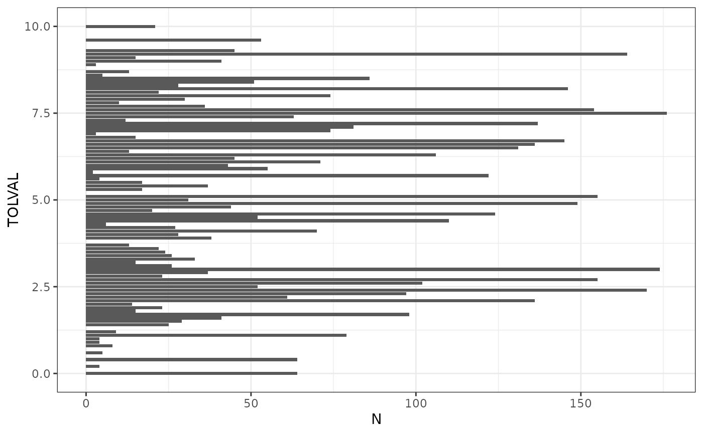
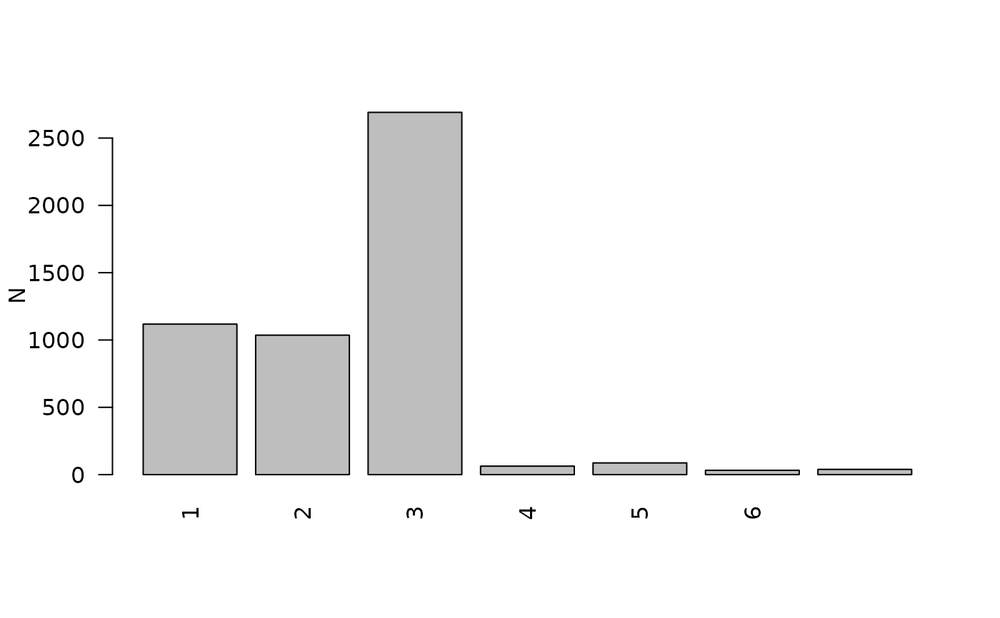

Performs basic QC of a numeric column showing all values.
qc_taxa_values_numeric(
data,
col_vals = NULL,
valid_min = NULL,
valid_max = NULL
)A data frame with col_vals values, occurrence (n), and valid (TRUE/FALSE) within range of valid_min and valid_max.
Returns a data frame of the values from the input with counts (column = n) from the specified column. User provided valid_min and valid_max are applied to each set of values and evaluated as valid TRUE or FALSE.
The BioMonTools accepted values for TolVal are 0 - 10.
The BioMonTools accepted values for UFC are 1 - 6.
# Example 1, TolVal
values_tv <- qc_taxa_values_numeric(data_benthos_MBSS, "TOLVAL", 0, 10)
## Plot
values_tv |>
dplyr::filter(valid == TRUE) |>
ggplot2::ggplot(ggplot2::aes(x = TOLVAL, y = n)) +
ggplot2::geom_col() +
ggplot2::coord_flip() +
ggplot2::theme_bw() +
ggplot2::labs(y = "N")

# Example , TolVal2
values_tv2 <- qc_taxa_values_numeric(data_benthos_MBSS, "TOLVAL2", 0, 10)
# Example 3, UFC
values_ufc <- qc_taxa_values_numeric(data_benthos_MBSS, "UFC", 1, 6)
## Plot
barplot(height = values_ufc$n,
names.arg = values_ufc$UFC,
las = 2,
#xlab = "Name",
ylab = "N")
